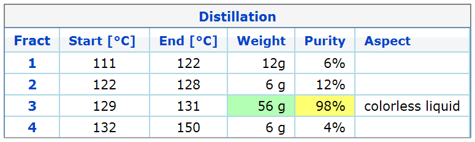
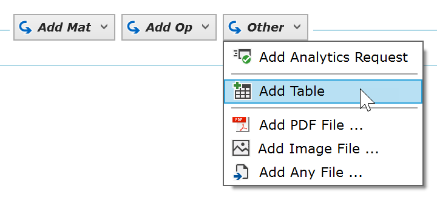
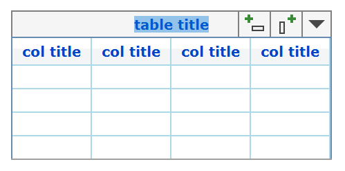
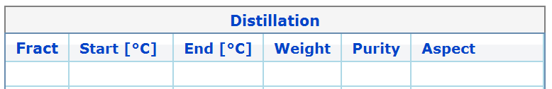
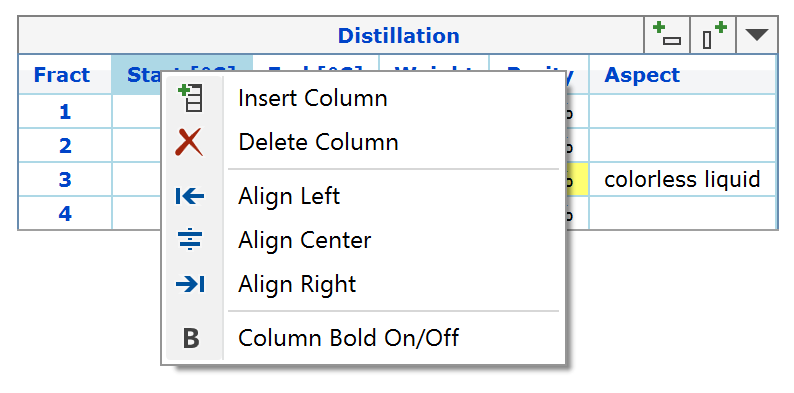
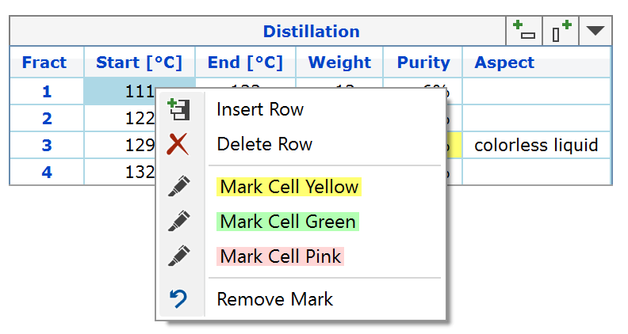
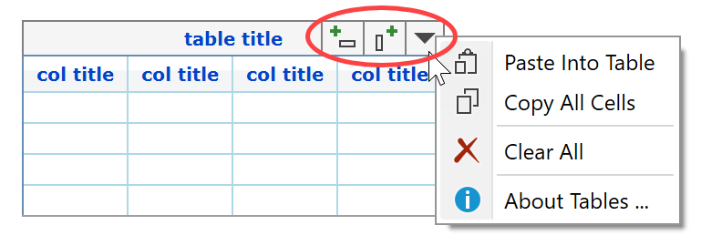

6) Add Tables
Tables are an important element of an experiment protocol, which allow to efficiently summarize a sequence of experimental data, e.g. for protocoling a distillation, impurity profiles, etc.
Espresso ELN features an easy-to-use and highly functional table protocol element, as illustrated below:

This table offers following functionality:
- Auto-sizing columns.
- Table title.
- Column & Row header titles.
- Cells accept multi-line content (just press RETURN key for next line).
- Cell highlighting.
- Column content alignment (left, center, right).
- Set column content to bold font.
- Add, insert and delete columns.
- Add, insert and delete rows.
- Paste spreadsheet and other table contents.
- Copy all cell contents.
- Clear table.
- Go to table help topic.
These options are accessible from the column and cell context menus, as well as from the table toolbar (only visible when an element of the table is selected).
To add a table, go to the experiment section toolbar and open the Other button menu:

After clicking the Add Table menu item, a table with an initial number of 4 rows and columns is added to the protocol. The table title is already selected and ready for editing:

The column titles can be overwritten as desired:

Press the ESC key whenever you are done editing.
Right-clicking a column header opens the column context menu, which provides options for column alignment, column insert/delete and to set/unset the column content to bold. When creating a new table, the first column content font is set to bold by default (can be changed later).

When right-clicking a table cell, the cell context menu appears, offering the options to insert or delete the row the cell is part of, and to mark or unmark the current cell by a colored background:

Whenever an element of the table is selected, a toolbar appears in its top right corner, providing following functionality:

- Add column: Appends a column to the right of the table.
- Add row: Appends a new row to the bottom of the table.
- Tools: Clicking the drop down arrow opens a menu with following options:
- Paste Into Table: Pastes copied spreadsheet or other tab-delimited table data into the current table (max. 8 columns). The table is re-dimensioned accordingly, if required. This overwrites any current table content, if present. If the width of the resulting table should be too wide to fit the protocol width, then best insert line breaks into long cell text, or shorten it - otherwise the clipped text is lost for printing and exports to PDF.
- Copy All Cells: Copies the contents of all cells of the table into the clipboard, ready to be pasted e.g. into an Excel spreadsheet.
- Clear All: Deletes the contents of all cells of the table.
- About Tables: Opens this help topic.
Next Step: Add images ...